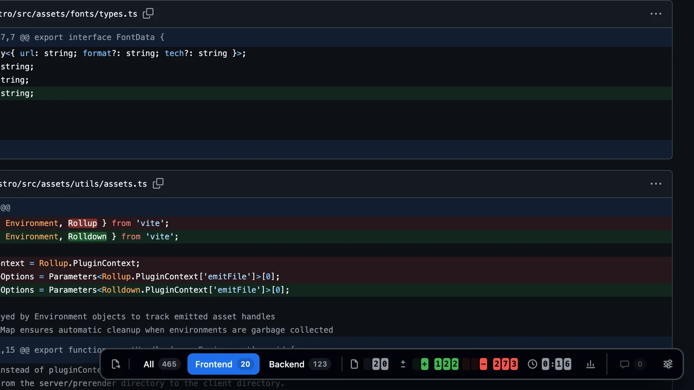
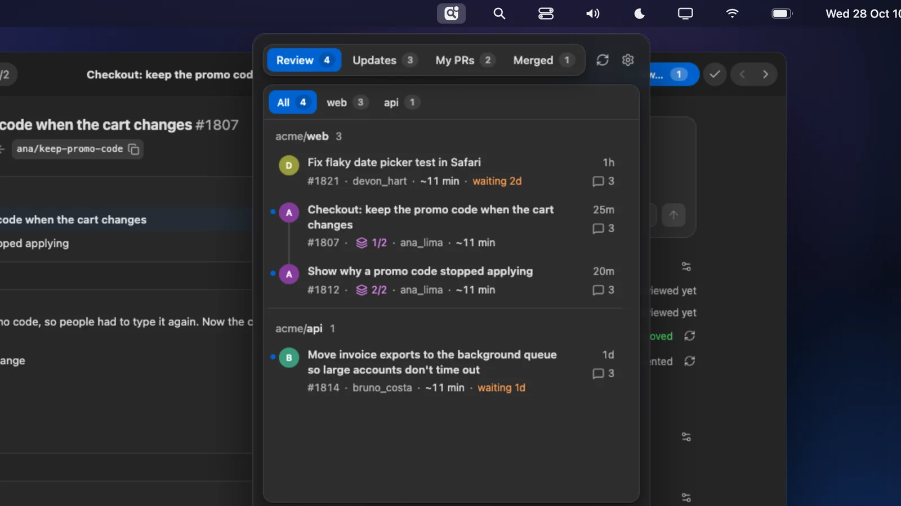

Review pull requests without the noise.
Focus Diff narrows a GitHub pull request to the part you own, tells you what’s left, and gets you to the next one. It works with the GitHub you’re already signed in to.
installs and counting
Two ways to review

The browser extension
Stays on github.com. A bar on every pull request filters it by file path and counts the files, lines and time left.
See the extension
The desktop app
Replaces github.com for reviewing: your queue in the menu bar, and a fast review window for the diff, comments and approvals.
See the desktop appNothing to sign up for.
Focus Diff has no account and no server. It works with the GitHub you already use, and talks to it directly.
No account
No sign-up, and nothing to set up on your repositories.
Nothing but GitHub
There is no server of ours for your code to go to. The only exception is the AI you choose to use in the desktop app.
No tracking
No analytics and no tracking cookies, on this site or in the apps.
Open source
MIT licensed, so every line can be checked. Read the privacy policy.
Questions
Is it free?
Yes. The extension and the desktop app are free and open source under the MIT license.
The extension or the desktop app?
The extension if you like reviewing on github.com: it makes each pull request page easier to work through. The desktop app if you’d rather not open GitHub at all. Use either, or both.
Does it send my code anywhere?
No. Focus Diff has no account and no server. It talks to GitHub with your own sign-in. The one exception is the desktop app’s AI, which runs your own Claude Code or Cursor, only when you ask it something.
Does it work on private repositories?
Yes. Both work on any pull request your GitHub account can open.
Does it work with GitLab or Bitbucket?
Not yet. It works on GitHub today.
Spend your reviews on the code.
Free, for Chrome, Edge, Firefox, Safari, Mac, Windows and Linux.